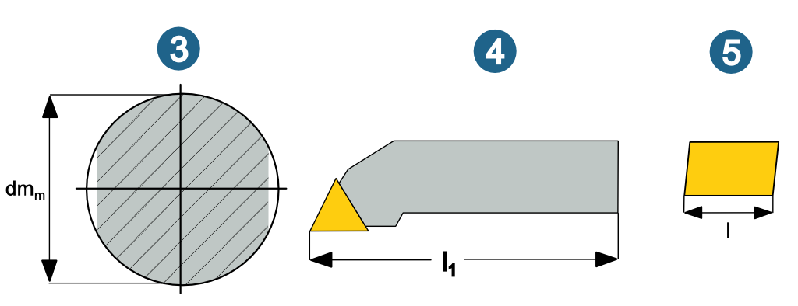
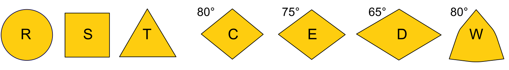
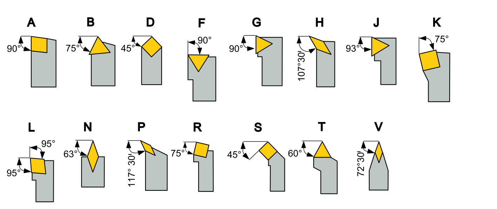
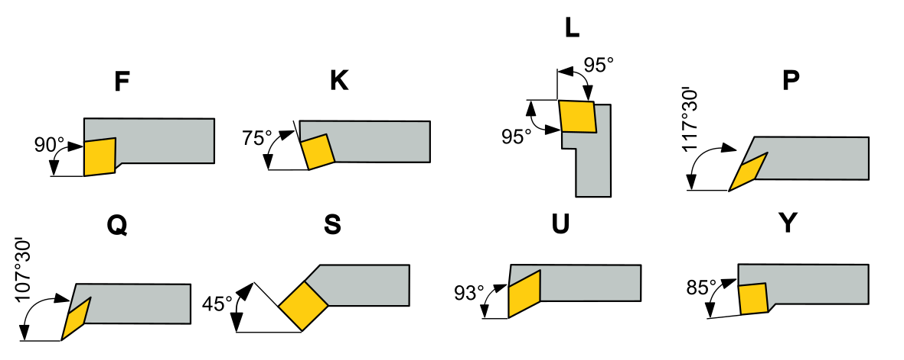
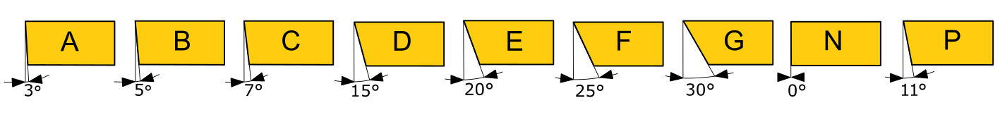
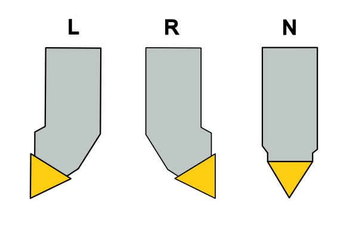
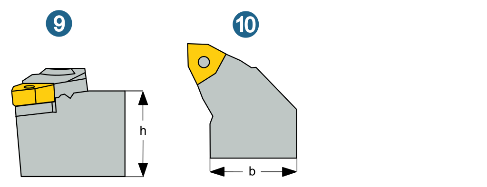
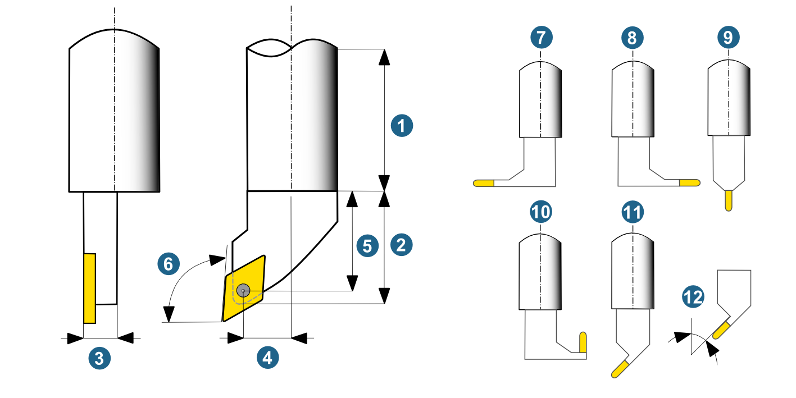
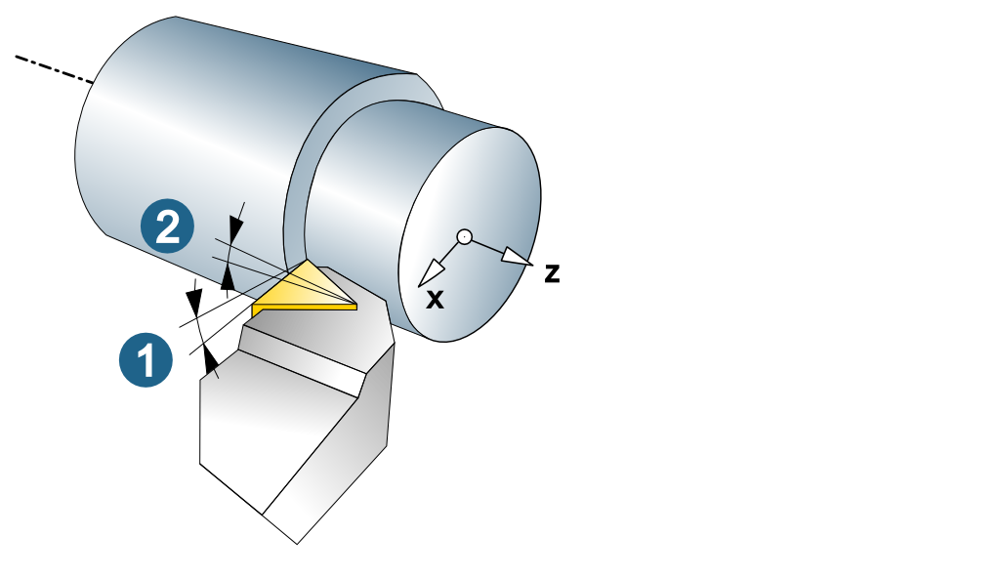
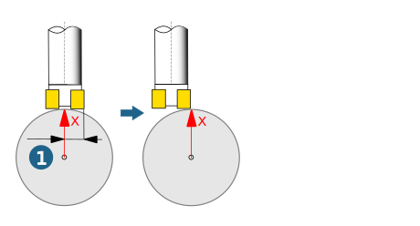

Define tool holder
-
On the Tool holder tab, select the → function from the shortcut menu.
-
Under Type, select Internal for turning tools for inside machining or External for turning tools for outside machining. If the later application of the tool holder has not yet been determined, select the Unknown option.
-
Specify a Name and optionally a Comment for the tool holder.
-
Define the Measurement system (metric / inch).
-
If the tool holder should be defined using an ISO/ANSI code, select the ISO/ANSI code active checkbox.
-

Open the Edit ISO/ANSI code dialog by clicking the icon.
Each digit of the ISO/ANSI code stands for a parameter that can be defined using a selection field. Depending on whether a tool holder is defined for inside or outside machining (internal/external), different parameters will be available for the ISO/ANSI code. Possible ISO/ANSI parameters are:
(1) Type: Internal: Turning tool for inside machining, External: Turning tool for outside machining
(2) Boring bar type
(3) Shank diameter, (4) Length, (5) Insert length
|  |
(5) Clamping method
 |
(6) Shape of insert
|  |
(7) Style, Type: external
|  |
(7) Style, Type: internal
|  |
(8) Free angle
|  |
(9) Mounting direction (left, right, neutral)
|  |
(9) Shank height, (10) Shank width
|  |
Define all necessary parameters in the Insert support, Geometry and, if necessary, Advanced tool definition areas.
Define insert support
-
Define which insert the tool holder is to support.
-
Define the insert support.
-
Use the selection field to select the shape of the insert and define the geometric parameters. The following options are available for this:
-
Select an existing insert directly by clicking the icon or
-
open the Edit ISO/ANSI code dialog and define an ISO/ANSI code.
If you define the insert support by means of the ISO/ANSI code, the geometry parameters are initially firmly linked to the ISO/ANSI code and cannot be edited. To edit the geometry parameters, break the link between the geometry parameters and ISO code.
To mount an insert to the tool holder, you must use an appropriate clamping method.
Define geometry of the tool holder
The following options are available to define the tool holder geometry:
-
Import as a 3D model using the hyperMILL TOOL Builder
-
In the tool database with the geometry editor
-
In hyperMILL / in the CAD system
Import as 3D model
Use the hyperMILL TOOL Builder to import a tool holder from a 3D model (format: *.stl). Proceed as follows:
-
Enable the 3D data option.
-

Start the hyperMILL TOOL Builder.
For information on the hyperMILL TOOL Builder, see the hyperMILL TOOL Builder product documentation.
In the tool database with the geometry editor
|
To define the geometry in the tool database, click the icon to open the geometry editor. |

Note
For tools with a free tip geometry, it is not possible to edit the cutting area in the geometry editor. For 3D geometries of tool holders, it is not possible to edit the profile in the geometry editor.
In hyperMILL / in the CAD system
To define the geometry by selecting contours in the CAD system:
-
Create a new turning tool either using the job definition or in the tool browser.
-

Click the icon in the Edit turning tool dialog (Shank geometry (part 1) area) to select the required contour in the CAD system (warning: the contour should not be closed!). If necessary, define the Shank geometry (part 2) and Extruded geometry in the same way.
-
Then define the Mounting point and Reference point for the Extruded geometry.
Note
The mounting point defines the location where the extruded geometry is mount-flanged to shank geometry. The reference point defines the alignment of the extruded geometry.
The following applies to the extruded geometry of the tool holder: The placement of the upper edge of the geometry (mounting point) must be on the coordinate y=0.
Tool holder geometry parameters
(1) Shank geometry, (2) Extruded geometry, (3) Extrusion thickness, (4) Axis distance, (5) Shank distance, (6) Approach angle, (7) Mounting direction: left, (8) Mounting direction: right, (9) Mounting direction: top, (10) Mounting direction: inverse.
(11) Mounting direction: angle and (12) Mounting direction angle are also available for tool holders of the recessing tool, axial recessing tool and threading tool types.
The Side of insert parameter (left, right, top) is also available for inserts of the recessing tool, axial recessing tool and parting tool types. For the mounting directions left, right and top, the side of insert parameter is pre-set accordingly, and cannot be changed manually.
|  |
Tool holder geometry parameters: hyperMILL TOOL Builder
The hyperMILL TOOL Builder calculates the Inclination angle (1) and Rake angle (2) parameters and displays them after import in the tool database graphical preview. These cannot be edited here.
|  |
Reversed: enable when the insert is to be installed inverted (only with tool holders for threaded inserts). (1) reversed not activated, (2) reversed activated
 |
Advanced tool definition
Y offset (1): For tools with multiple inserts, the Y offset results in the tool moving from the center position.
|  |